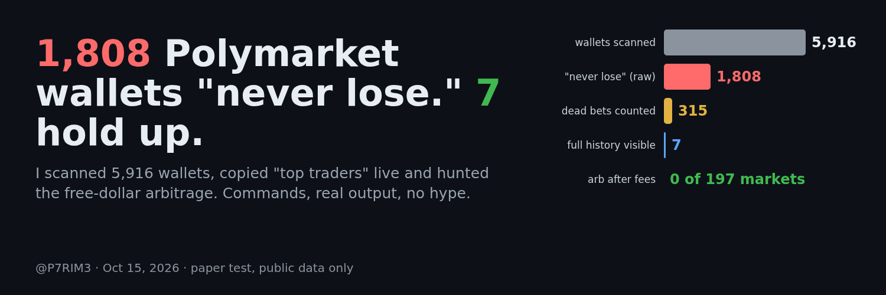
By P7RIM3 (@P7RIM3) · Thursday, October 15, 2026 (ET) · paper test, public data only, no money traded
How I checked this. Every number below comes from my own runs on my Grok Bot box against Polymarket's public APIs, or from the linked sources. The wallet scan ran Oct 15, 2026, 2:55 to 4:10 AM ET. The arbitrage and copy-trading simulators were frozen for this article at 10:44 AM ET. Every terminal image shows the exact command and its real output. Web images are real screenshots of the live pages. Charts are drawn straight from those files. Nothing here is financial advice, and I never placed a real order.
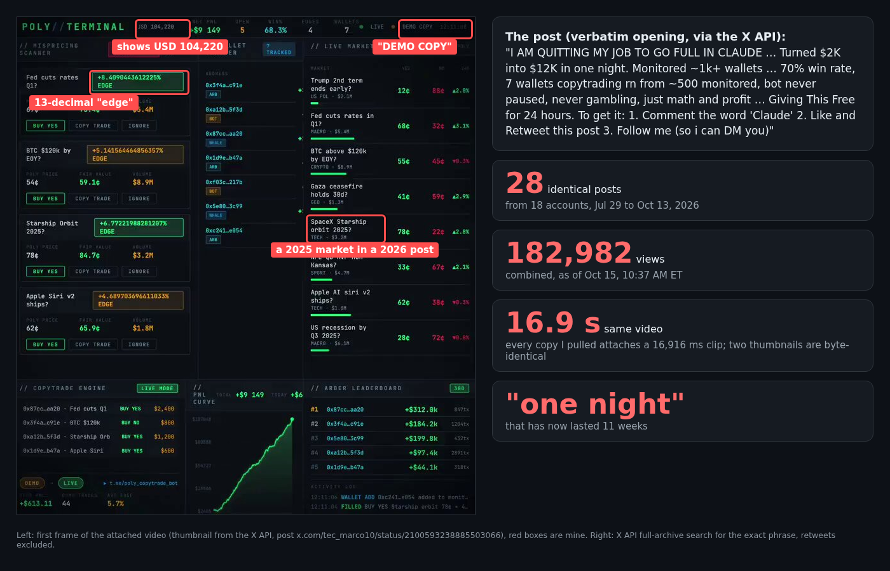
You've seen it. "I AM QUITTING MY JOB TO GO FULL IN CLAUDE." The AI scanned Polymarket, found the wallets that win, copied them, and "turned $2K into $12K in one night." Then: comment "Claude," like, repost and follow, and they'll DM you the bot.
I pulled every copy of that exact sentence from X's full-archive search. It's been posted 28 times by 18 accounts between July 29 and October 13, 2026, for 182,982 views combined. The "one night" has lasted 11 weeks. Every copy I pulled attaches the same 16.9-second video, and its first frame literally says "DEMO COPY", shows a balance of USD 104,220, and lists a market called "SpaceX Starship orbit 2025?" in a 2026 post.
Its cousins are everywhere too. A coffee-shop story claims Claude "scanned 14,000 wallets in 4 minutes. Returned 47." A 67-year-old grandfather supposedly has "168 trades. A claimed 100% win rate." The idea under all of them is the same: some wallets never lose, a bot can find them, and you can copy them.
So I built it myself, in paper mode, with only public data. I scanned 5,916 wallets, ran a live copy-trader on the "best" ones, and ran a 19-hour hunt for the free-dollar arbitrage these posts love. Here's how to do every step yourself, and what actually came out.
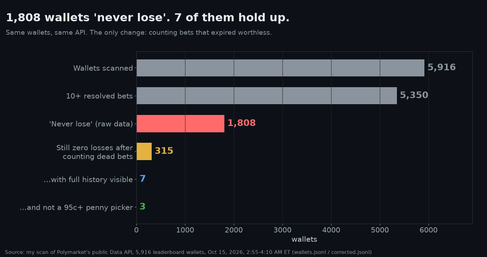
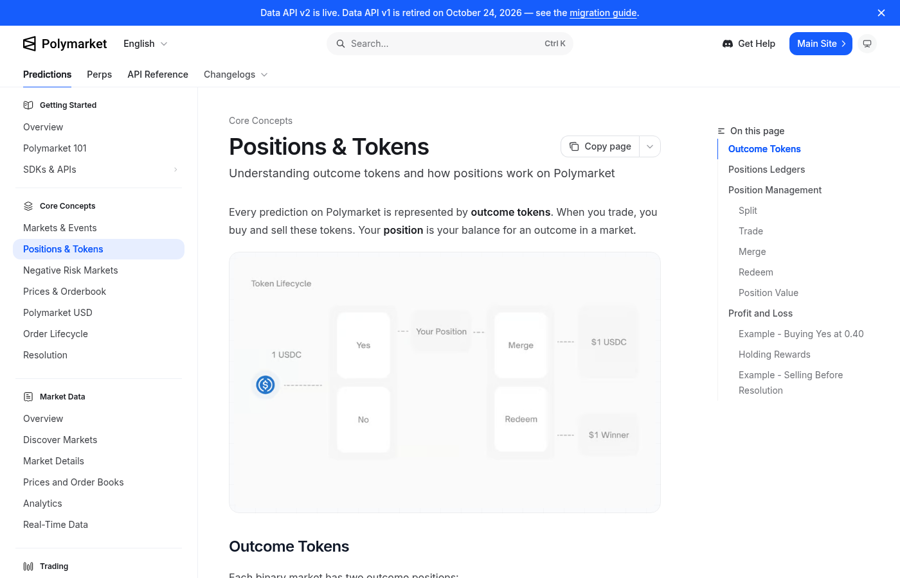
If you've never used it, here's all you need for this article.
Point 3 is the whole story. A winner gets redeemed and becomes a "closed position." A loser is worth $0, so there's nothing to redeem, and it can just sit there.
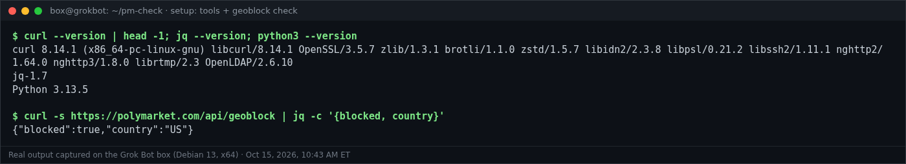
You don't need an account, an API key or any money. You need a terminal with three free tools.
curl.exe).brew install jq on macOS, sudo apt install jq on Debian/Ubuntu).pip install.Run this to confirm everything is there:
curl --version | head -1; jq --version; python3 --version
Expected output (your versions can differ):
curl 8.14.1 (x86_64-pc-linux-gnu) libcurl/8.14.1 ...
jq-1.7
Python 3.13.5
The second command in the screenshot asks Polymarket whether my connection may trade. From a US address the answer is {"blocked":true,"country":"US"}. Reading public data is fine from anywhere; trading on polymarket.com is not (more on that in section 18).
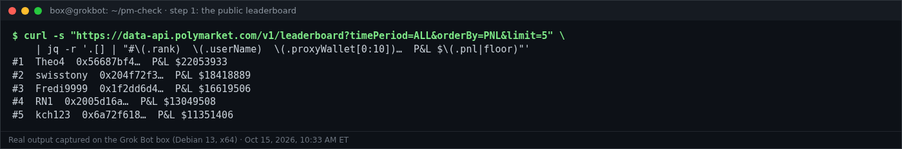
Every "I scanned thousands of wallets" post starts here. The leaderboard lists wallets ranked by profit (PNL) or volume (VOL) over a day, week, month or all time.
curl -s "https://data-api.polymarket.com/v1/leaderboard?timePeriod=ALL&orderBy=PNL&limit=5" \
| jq -r '.[] | "#\(.rank) \(.userName) \(.proxyWallet[0:10])… P&L $\(.pnl|floor)"'
Expected output (as of 10:33 AM ET today):
#1 Theo4 0x56687bf4… P&L $22053933
#2 swisstony 0x204f72f3… P&L $18418889
#3 Fredi9999 0x1f2dd6d4… P&L $16619506
My scanner did this for all four time periods, both rankings, up to 2,000 deep, which gave 8,254 unique wallets. I added 1,610 more from the latest 10,000 public trades, for 9,864 in total. The API slowed to about half a wallet per second, so I stopped after 5,916, all of them leaderboard wallets. That's already a sample biased toward winners, which only makes the result below more striking.
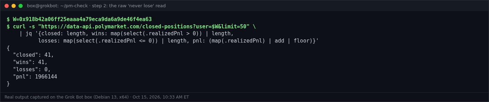
Now read one wallet's closed positions the way the viral bots do. I'll use wallet 0x918b42a06ff25eaaa4a79eca9da6a9de46f4ea63, which came up in my scan.
W=0x918b42a06ff25eaaa4a79eca9da6a9de46f4ea63
curl -s "https://data-api.polymarket.com/closed-positions?user=$W&limit=50" \
| jq '{closed: length, wins: map(select(.realizedPnl > 0)) | length,
losses: map(select(.realizedPnl <= 0)) | length, pnl: (map(.realizedPnl) | add | floor)}'
Expected output:
{
"closed": 41,
"wins": 41,
"losses": 0,
"pnl": 1966144
}
41 for 41 and almost $2 million in profit. A 100% win rate. This is exactly the wallet a "find wallets that never lose" prompt returns, and exactly the wallet a copy bot would follow. Hold that thought.
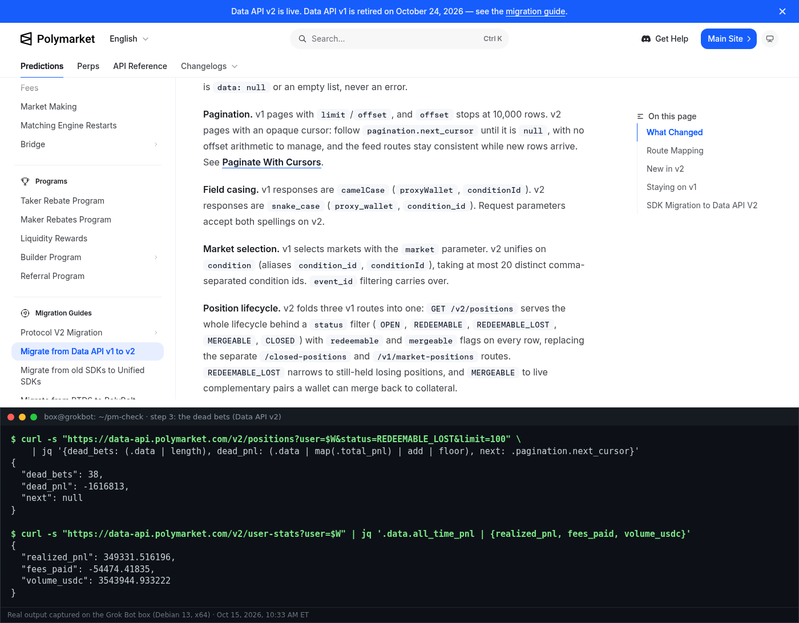
Polymarket's own Data API v1 to v2 migration guide tells you where the losers are. The new /v2/positions route has a status filter, and "REDEEMABLE_LOST narrows to still-held losing positions." The same page warns that Data API v1 is retired on October 24, 2026, so new tools should use v2.
curl -s "https://data-api.polymarket.com/v2/positions?user=$W&status=REDEEMABLE_LOST&limit=100" \
| jq '{dead_bets: (.data | length), dead_pnl: (.data | map(.total_pnl) | add | floor), next: .pagination.next_cursor}'
Expected output:
{
"dead_bets": 38,
"dead_pnl": -1616813,
"next": null
}
There they are: 38 losing bets worth -$1.62M (v2's total_pnl includes entry fees). The "41-0" wallet is really 41-38. Its real all-time realized profit, from the same API:
curl -s "https://data-api.polymarket.com/v2/user-stats?user=$W" | jq '.data.all_time_pnl | {realized_pnl, fees_paid, volume_usdc}'
{
"realized_pnl": 349331.516196,
"fees_paid": -54474.41835,
"volume_usdc": 3543944.933222
}
So $349K, not $1.97M. Still a good result for this wallet. It's just not a wallet that never loses. It wins about half the time with big sizes.
If next isn't null, the wallet has more than 100 dead bets. Repeat the call with &cursor=<that value> until it is.
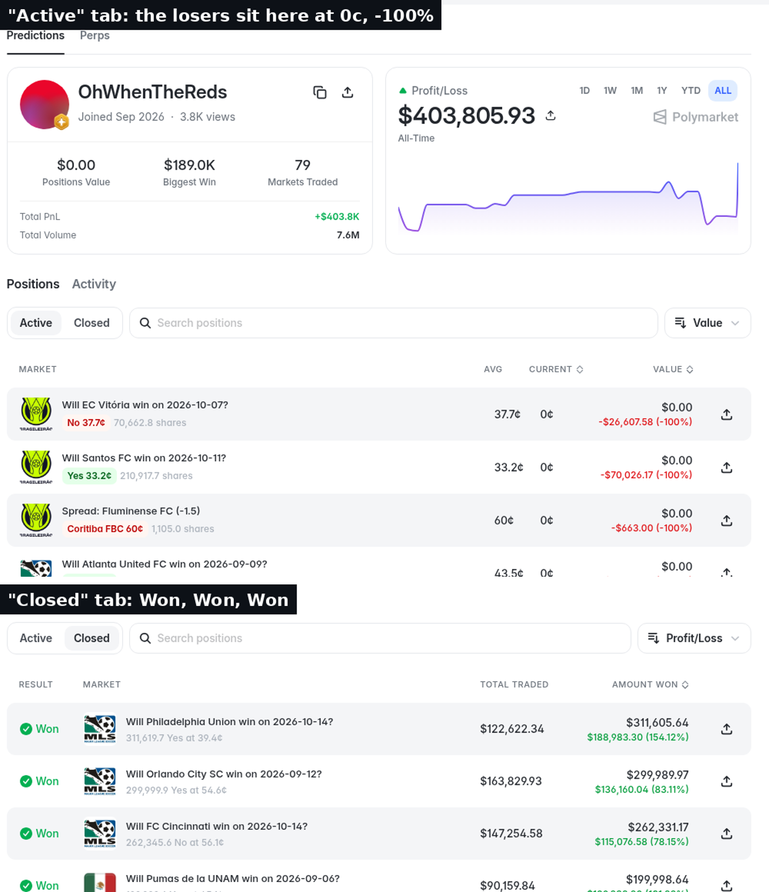
You don't have to trust my terminal. Open the wallet's public profile at polymarket.com/profile/0x918b… (from the US, click "Continue in view only mode").
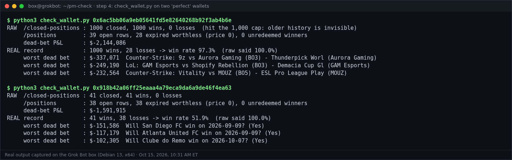
Here's the whole check in one file. Save it as check_wallet.py. It only reads public data.
#!/usr/bin/env python3
"""check_wallet.py: does this Polymarket wallet really "never lose"? Public data only, no keys.
Usage: python3 check_wallet.py 0xWALLET"""
import json, sys, urllib.request
API = "https://data-api.polymarket.com"
def get(path):
req = urllib.request.Request(API + path, headers={"user-agent": "wallet-check"})
with urllib.request.urlopen(req, timeout=20) as r: return json.load(r)
w = sys.argv[1].lower()
closed = [] # 1) what the "never lose" posts read
for off in range(0, 1000, 50):
page = get(f"/closed-positions?user={w}&limit=50&offset={off}")
closed += page
if len(page) < 50: break
wins = sum(p["realizedPnl"] > 0 for p in closed); losses = len(closed) - wins
print(f"RAW /closed-positions : {len(closed)} closed, {wins} wins, {losses} losses"
+ (" (hit the 1,000 cap: older history is invisible)" if len(closed) >= 1000 else ""))
opn = [] # 2) where the dead bets sit
for off in range(0, 2000, 500):
page = get(f"/positions?user={w}&limit=500&offset={off}&sizeThreshold=0")
opn += page
if len(page) < 500: break
dead = [p for p in opn if p["curPrice"] <= 0.001 and (p["redeemable"] or p["curPrice"] == 0)]
unred = [p for p in opn if p["redeemable"] and p["curPrice"] >= 0.999]
print(f" /positions : {len(opn)} open rows, {len(dead)} expired worthless (price 0), "
f"{len(unred)} unredeemed winners")
print(f" dead-bet P&L : ${sum(p['cashPnl'] for p in dead):,.0f}")
W, L = wins + len(unred), losses + len(dead)
print(f"REAL record : {W} wins, {L} losses -> win rate {100*W/max(W+L,1):.1f}%"
f" (raw said {100*wins/max(len(closed),1):.1f}%)")
worst = sorted(dead, key=lambda p: p["cashPnl"])[:3]
for p in worst: print(f" worst dead bet : ${p['cashPnl']:,.0f} {p['title'][:60]} ({p['outcome']})")
Run it:
python3 check_wallet.py 0x6ac5bb06a9eb05641fd5e82640268b92f3ab4b6e
Expected output (Oct 15, 10:31 AM ET):
RAW /closed-positions : 1000 closed, 1000 wins, 0 losses (hit the 1,000 cap: older history is invisible)
/positions : 39 open rows, 28 expired worthless (price 0), 0 unredeemed winners
dead-bet P&L : $-2,144,086
REAL record : 1000 wins, 28 losses -> win rate 97.3% (raw said 100.0%)
Two things to notice. First, a "1,000 wins, 0 losses" wallet is hiding 28 dead bets worth -$2.14M, including one Counter-Strike bet that lost $337,071. Second, that wallet hit the 1,000-row cap. The closed list stops at 1,000 rows sorted by profit, so you literally can't see its older or smaller results. Any "win rate" for a wallet like that is unknowable from this endpoint, in either direction.
This script uses the v1 routes, which work until Polymarket retires them on October 24, 2026. After that, swap in the v2 calls from step 3.
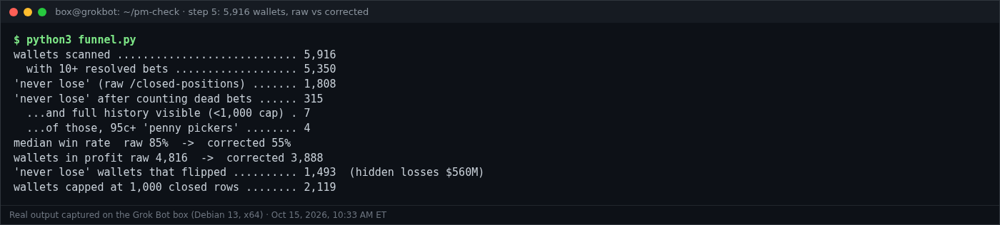
My scanner ran the same two reads on every wallet: closed positions (up to the 1,000 cap), then open positions, counting a price-0 position as a loss and an unredeemed $1 position as a win. Then a small script summarizes it (it reads my scan files, so it's here to show the method; check_wallet.py is the one you can run on any wallet):
python3 funnel.py
wallets scanned ............................ 5,916
with 10+ resolved bets ................... 5,350
'never lose' (raw /closed-positions) ....... 1,808
'never lose' after counting dead bets ...... 315
...and full history visible (<1,000 cap) . 7
...of those, 95c+ 'penny pickers' ........ 4
median win rate raw 85% -> corrected 55%
wallets in profit raw 4,816 -> corrected 3,888
'never lose' wallets that flipped .......... 1,493 (hidden losses $560M)
wallets capped at 1,000 closed rows ........ 2,119
Read that bottom line twice. 2,119 of the 5,350 wallets hit the cap, so for 40% of the wallets with 10+ resolved bets, nobody can tell you their real win rate from this data. Any bot that says it can is reading the cap as a perfect record.
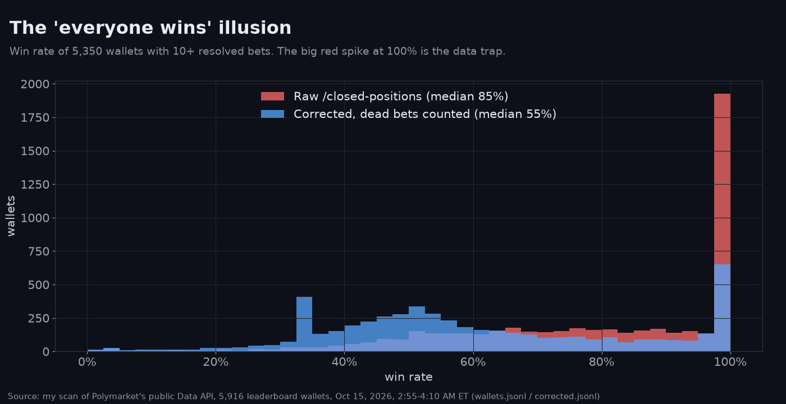
This chart is the whole hype cycle in one picture. In red, the raw data: a giant spike at 100%, as if a third of Polymarket's top traders never miss. In blue, the same wallets with dead bets counted: a hump around 50%, which is what you'd expect from people betting on mostly fair prices.
The median win rate goes from 85% to 55%. The number of wallets in profit drops from 4,816 to 3,888. Nobody got worse at trading between the two bars. The only thing that changed is that the losses became visible.
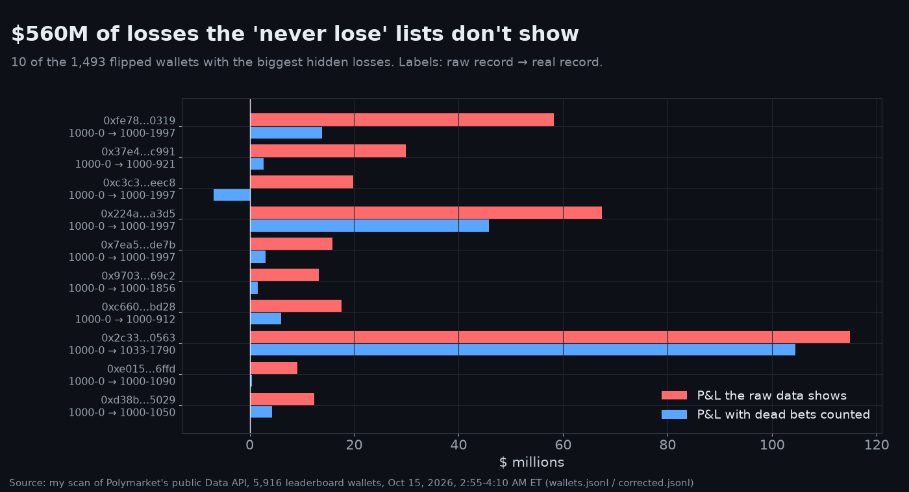
Of the 1,808 raw "never lose" wallets, 1,493 flipped once the dead bets were counted. Together they were hiding about $560 million in losing positions.
The chart shows the 10 biggest. Look at the labels. Wallets that read "1000-0" turn out to be 1000-921, 1000-1090, 1000-1997. One shows $19.8M of profit in the raw data and is actually down $6.9M once its dead bets count. The 1,997 figure is itself a floor, since my scanner stopped reading open positions at 2,000 rows.
If you asked an AI to "find wallets with a 70%+ win rate" and it read the closed list, these are the wallets it handed you.
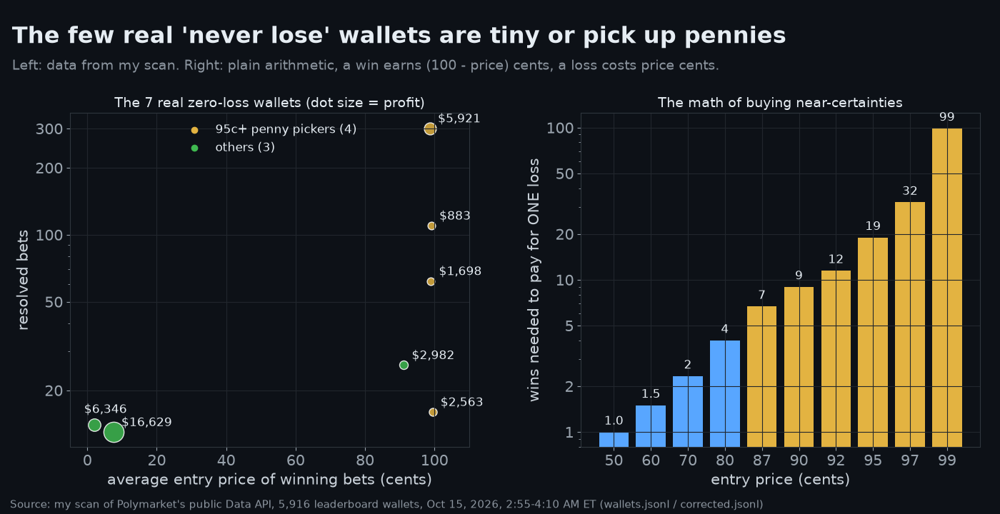
So who are the 7 wallets with zero losses and a fully visible history?
The right side is the arithmetic. At 95 cents, a win earns 5 cents and a loss costs 95, so you need 19 wins to pay for one loss. At 99 cents you need 99. That's why the grandfather post's "100% win rate" targets "contracts priced at 87 to 92 cents": by this math, one miss at 90 cents erases 9 wins. A perfect record at those prices doesn't mean skill. It means the first loss hasn't happened yet.
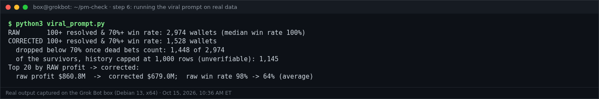
The coffee-shop post gives its exact prompt: "Find wallets with 100+ trades and 70%+ win rate. Rank by profit. Export the best ones." It claims Claude scanned 14,000 wallets in 4 minutes and returned 47. I ran that filter on my data.
python3 viral_prompt.py
RAW 100+ resolved & 70%+ win rate: 2,974 wallets (median win rate 100%)
CORRECTED 100+ resolved & 70%+ win rate: 1,528 wallets
dropped below 70% once dead bets count: 1,448 of 2,974
of the survivors, history capped at 1,000 rows (unverifiable): 1,145
Top 20 by RAW profit -> corrected:
raw profit $860.8M -> corrected $679.0M; raw win rate 98% -> 64% (average)
On raw data that filter doesn't return 47 wallets out of 14,000. It returns 2,974 out of 5,916, with a median win rate of 100%. Half of them fall under 70% once dead bets count, and most of the rest are capped, so they can't be checked at all. The "top 20" lose about $182M of their profit and drop from a 98% to a 64% average win rate.
Also, 4 minutes for 14,000 wallets is about 58 wallets a second. Polymarket's API slowed my scanner to roughly half a wallet per second, and my copier logged a "429 Too Many Requests" (section 23).
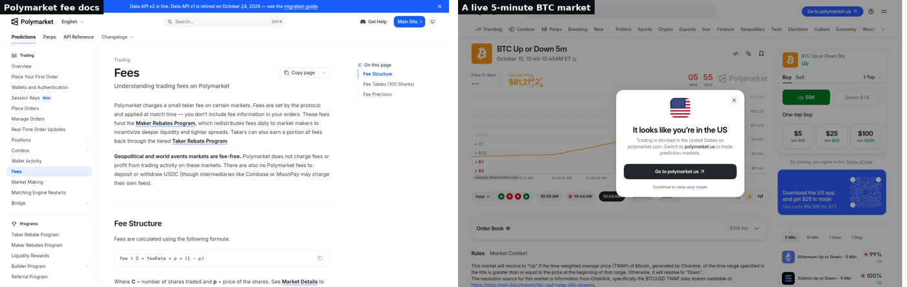
The $2K-to-$12K post says the bot copies "arbitrage" wallets. The classic Polymarket arbitrage is the complete set: buy one "Up" and one "Down" share in the same market. Exactly one pays $1 at the end. If both together cost less than $1, the difference is free money.
The catch is fees. Polymarket's fee docs give the formula fee = C × feeRate × p × (1 - p), where C is the number of shares and p is the price. Crypto markets use a taker rate of 0.07. At 50 cents per side, that's 0.07 × 0.5 × 0.5 = 1.75 cents per share, or 3.5 cents for the pair. So a 50/50 pair has to be priced under about 96.5 cents before fees just to break even.
The busiest arbitrage playground is the 5-minute "Bitcoin Up or Down" market, which resolves every 5 minutes, all day.
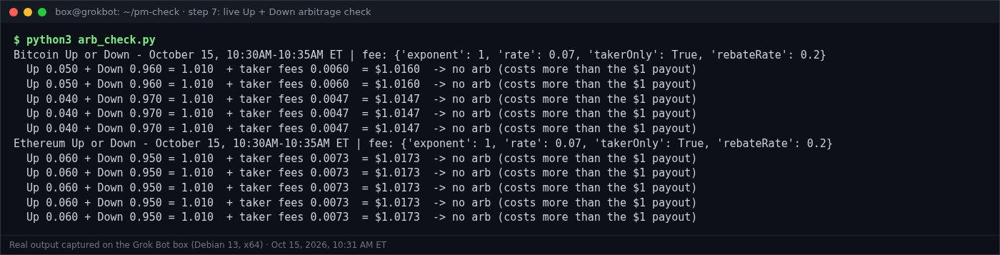
Save this as arb_check.py. It finds the current 5-minute BTC and ETH markets, reads the best ask on each side five times, adds the market's own fee schedule, and tells you whether the pair costs less than $1.
#!/usr/bin/env python3
"""arb_check.py: is there a free dollar in Polymarket's 5-minute BTC/ETH Up/Down markets right now?
Buys 1 Up + 1 Down at the best asks. One of them pays $1 at the end. Public data only."""
import json, time, urllib.request
def get(url, data=None):
req = urllib.request.Request(url, data=json.dumps(data).encode() if data else None,
headers={"content-type": "application/json", "user-agent": "arb-check"})
with urllib.request.urlopen(req, timeout=10) as r: return json.load(r)
w = int(time.time()) // 300 * 300
for coin in ("btc", "eth"):
m = get(f"https://gamma-api.polymarket.com/markets?slug={coin}-updown-5m-{w}")[0]
fs = m["feeSchedule"]; up, dn = json.loads(m["clobTokenIds"])
print(m["question"], "| fee:", fs)
for i in range(5):
books = {b["asset_id"]: b for b in get("https://clob.polymarket.com/books", [{"token_id": up}, {"token_id": dn}])}
a = [min(float(x["price"]) for x in books[t]["asks"]) for t in (up, dn)]
fee = sum(fs["rate"] * (p * (1 - p)) ** fs["exponent"] for p in a) # docs: fee = rate x p(1-p) per share
tot = a[0] + a[1] + fee
print(f" Up {a[0]:.3f} + Down {a[1]:.3f} = {a[0]+a[1]:.3f} + taker fees {fee:.4f} = ${tot:.4f} -> "
+ ("ARB: profit %.2fc/set" % ((1-tot)*100) if tot < 1 else "no arb (costs more than the $1 payout)"))
time.sleep(2)
python3 arb_check.py
Expected output (10:31 AM ET, near the end of a 5-minute window):
Bitcoin Up or Down - October 15, 10:30AM-10:35AM ET | fee: {'exponent': 1, 'rate': 0.07, 'takerOnly': True, 'rebateRate': 0.2}
Up 0.050 + Down 0.960 = 1.010 + taker fees 0.0060 = $1.0160 -> no arb (costs more than the $1 payout)
One snapshot proves nothing, so I left a simulator watching every market for 19 hours.
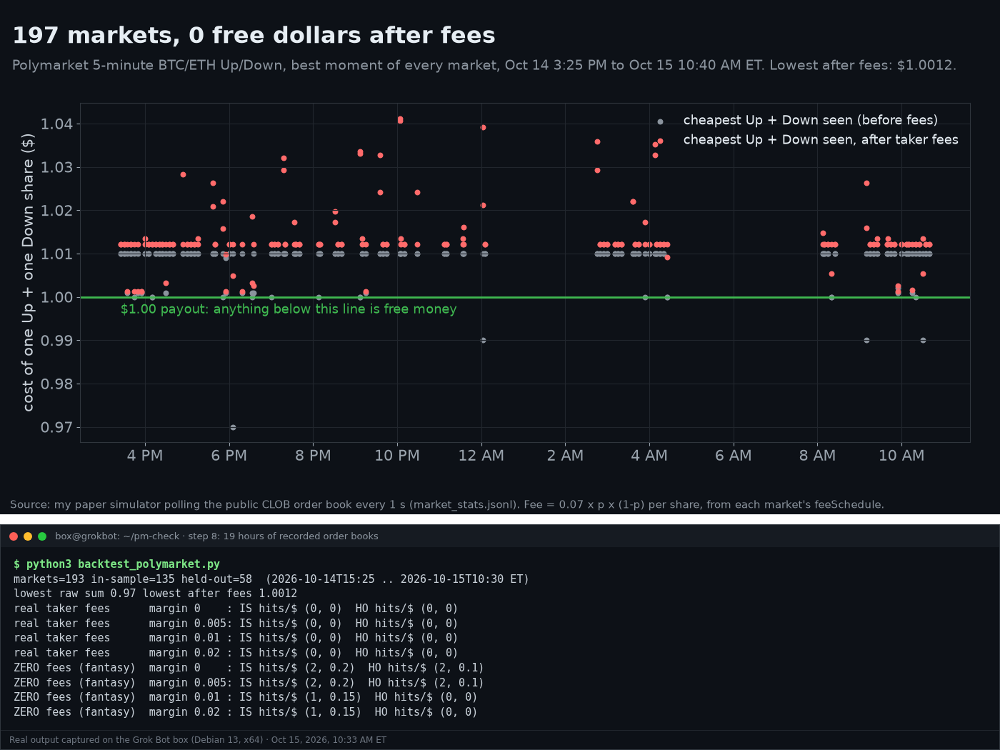
My paper simulator has polled both order books every second since Oct 14 at 3:07 PM ET. When the pair plus fees drops under $1, it waits a simulated 300 to 500 milliseconds (a realistic delay), checks the book again, and "buys" up to $9 of matched pairs.
Here's what it recorded for the 197 markets it completed between Oct 14, 3:25 PM and Oct 15, 10:40 AM ET:
python3 backtest_polymarket.py
markets=197 in-sample=137 held-out=60 (2026-10-14T15:25 .. 2026-10-15T10:40 ET)
lowest raw sum 0.97 lowest after fees 1.0012
real taker fees margin 0 : IS hits/$ (0, 0) HO hits/$ (0, 0)
ZERO fees (fantasy) margin 0 : IS hits/$ (2, 0.2) HO hits/$ (2, 0.1)
I can't rule out gaps faster than one second, but if they exist they belong to the market makers sitting closest to the exchange, not to a Telegram copy bot.
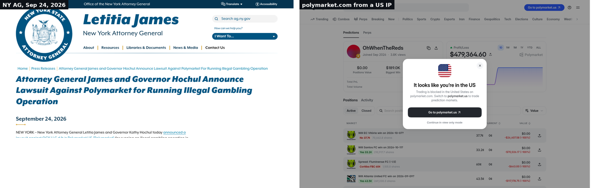
Before anyone buys a "bot," know where they're allowed to trade.
None of the viral posts mention any of this. They also gloss over the setup. The post says it copies "using TG copytrading bot" and the video frame shows a t.me link. Before you connect any Telegram bot to real money, ask who controls the wallet it trades from.
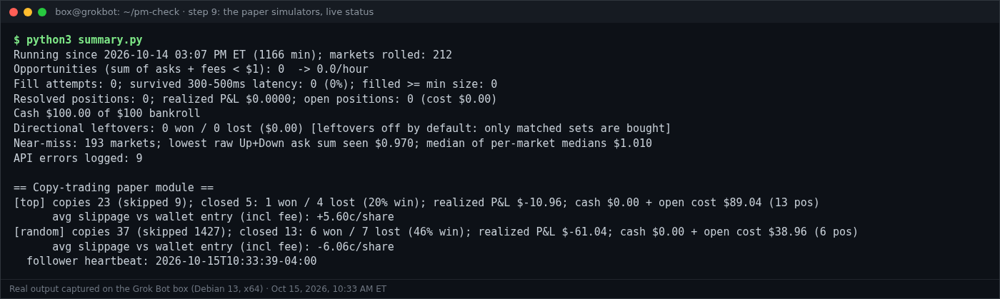
Finding "good" wallets is half the pitch. Copying them is the other half. So I built a paper copy-trader with two groups of 50 wallets each:
Every 60 seconds it checks each wallet's public trades. When one buys, it waits 3 to 10 seconds, then buys up to $5 at the real order-book asks plus the taker fee, with a $100 paper bankroll per group. It copies their sells too. It started Oct 15 at 4:11 AM ET.
[top] copies 23 (skipped 13); closed 5: 1 won / 4 lost (20% win); realized P&L $-10.96; cash $0.00 + open cost $89.04 (13 pos)
[random] copies 37 (skipped 1589); closed 13: 6 won / 7 lost (46% win); realized P&L $-61.04; cash $0.00 + open cost $38.96 (6 pos)
This is about 6.5 hours of data, so the profit numbers are noise. I'm not calling a winner. The prices tell the story, though.
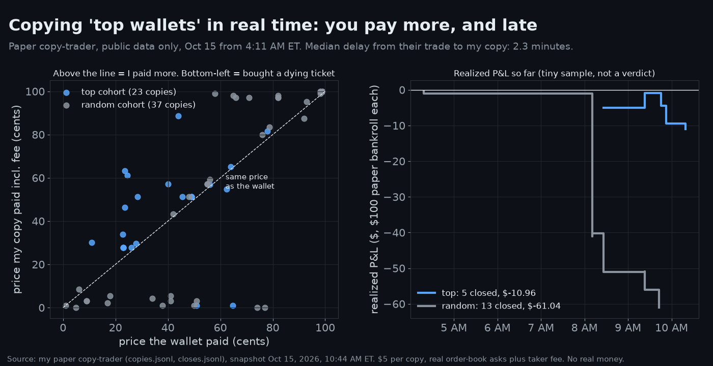
Three things showed up right away.
The ugliest example: at 4:18 AM one random-group wallet fired off 15 trades on both sides of the same 5-minute Bitcoin market. My copier followed all 15 within 5 seconds, spending $75 of the $100. It bought "Up" at 2 to 5 cents (the wallet had paid 9 to 51) and "Down" at 97 to 99 cents. "Up" went to zero. That one market cost about $39. Copying a two-sided bot means buying its hedges at worse prices, after the fact.
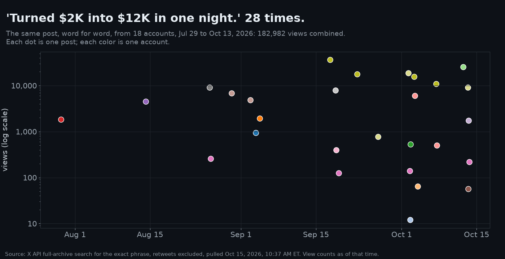
I'm not calling anyone a scammer. I'm showing you a template. Here's what the posts claim versus what the data says:
If a bot really printed money from public data, it wouldn't need your follow.
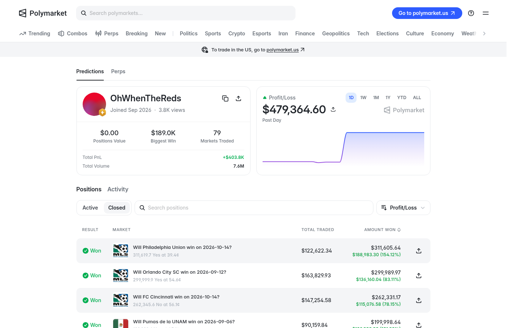
Next time someone posts a "perfect" wallet, do this before you believe it.
check_wallet.py). If dead_bets is more than zero, the record isn't perfect.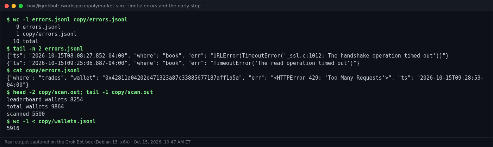
To be straight about the limits:
The full scripts and raw files are on my box, and every command above runs against the same public endpoints, so you can reproduce any number here yourself.
Sources: Polymarket fees · Data API v1 to v2 migration · Positions & Tokens · Resolution · Data API v2 OpenAPI spec · NY AG lawsuit, Sep 24, 2026 · Polymarket's removal to federal court · Polymarket US v. James complaint · the $2K-to-$12K post, most-viewed copy · its earliest copy, Jul 29 · the coffee-shop post · the grandfather post · jq
So here's the question for everyone selling these bots: if your wallets never lose, why does Polymarket's own app show their losses?